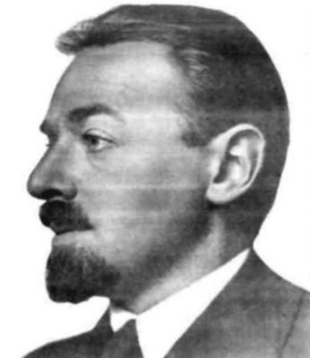

Introduction to Motor Learning and Performance
The human capacity to control and learn motor skills — and how you’ll use it in the clinic, the gym, and everyday life.
This course is about the human capacity to control and learn motor skills — and how you can help other people learn them.
By the end of this module, you will be able to…
- 1Define motor skills, actions, movements, and neuromotor processes — and explain how they differ.
- 2Distinguish motor learning, motor control, and motor development, with examples from rehab, sport, and daily living.
- 3Identify the characteristics of a skillful performer: consistency, adaptability, efficiency.
- 4Recognize the problem-solving nature of skill learning (Bernstein’s perspective).
Skills, movements, and the machinery underneath
Three words that get used interchangeably in ordinary speech — and shouldn’t be here.
Skills / actions
Have a goal. Performed voluntarily. Require control of joints and body segments to meet that goal. And crucially — they must be learned, or relearned.
Movements
The specific patterns of motion among joints and body segments. The how, not the why.
Neuromotor processes
The mechanisms in the nervous and muscular systems that underlie the control of movements and actions.
A patient can produce the movements and still fail the skill — the goal isn’t met. Naming which level has broken down is the difference between treating a symptom and treating the problem.
What level is this?
Each description below sits at one of the three levels you just met. Answer all three to continue.
1. A patient works on buttoning her shirt so she can dress herself independently in the morning.
2. During that same task, her elbow flexes to about 90° while her wrist holds neutral and her fingers pinch.
3. As she pinches, motor units in her finger flexors are recruited from smallest to largest as more force is needed.
Same moment, three levels. The skill is the goal she’s pursuing, the movement is the joint pattern that serves it, and the neuromotor process is the machinery producing that pattern. Ask “is this a goal, a motion, or a mechanism?” and the level falls out.
Answer all three to continue.
Learning, control, development
Three lenses on movement, pointing at different questions. Select each to see what it studies.
Acquiring and reacquiring skill
Studies the acquisition of new skills, the enhancement of well-practiced ones, and the reacquisition of skills after injury or disease. Its concern is the relatively permanent change practice produces.
An adult taking up the guitar for the first time. Nothing is being recovered — the coordination is being built from scratch. Weeks in, can she fret a chord cleanly without looking? That persistence is what makes it learning.
A stroke survivor relearning to walk. The skill was there before; the nervous system has to find its way back to it. You don’t just care about today’s performance — you care whether the gains survive to next week.
Both are motor learning. The difference is whether the learner is building something new or recovering something lost — and that difference shapes how you’d structure practice.
Coordinating the system in the moment
Asks how the neuromuscular system activates and coordinates muscles and joints to produce a skill — while learning something new and while performing something mastered.
How the knee’s proprioceptors feed the nervous system to keep a person upright — and what changes after a total knee replacement.
Change across the lifespan
Studies motor behavior and its underlying processes from infancy through old age — how capabilities emerge, mature, and decline over years.
Why a toddler’s first steps look nothing like an adult’s gait, and how balance strategies shift again in later life.
Which lens is this?
Answer both to continue.
1. Over a season, a sprinter trains with biofeedback on the forces she produces against the starting blocks. Her coach tests her months later, without the biofeedback, to see whether the improved force profile has stuck.
2. In a single explosive start, a researcher records EMG from the sprinter’s lower-limb muscles to see how the nervous system activates them and in what sequence as she drives out of the blocks.
Same athlete, same skill — different question. Learning asks whether a change persists after the intervention is taken away, which is why it needs a delayed retention test. Control asks how the system coordinates itself right now, inside a single performance. When you’re unsure, ask: is something being tracked across sessions, or measured within one?
Answer both to continue.
Questions this course will let you answer
Each is a real problem you may face as a clinician, coach, or trainer. Expand any that interest you — optional, but they preview where we’re headed.
What challenges does a patient face reacquiring a skill the nervous system once performed automatically — and how should you structure rehab so the relearning transfers to their home and street?
Working through a mirror reverses your visual feedback. How would you organize practice so a novice builds accurate control instead of grooving in errors?
What kind and amount of feedback helps someone learn — and does the answer change for a novice versus an expert? We return to this at augmented feedback.
How would you expect a total knee replacement to affect the joint’s position sense — and what does that mean for the patient’s movement and balance?
Is coordination something people are born with, or something built through practice? Can anyone learn any skill, or are some people simply more coordinated from the start? Hold onto your intuition — the course will complicate it.
Learning to drum
Say you decide to learn drumming. Where do you even start? You familiarize yourself with the kit. You learn to hold the sticks. Then — practice, practice, practice.
That obvious-sounding sequence hides every question this course studies: what to attend to, how to structure practice, and how feedback shapes what sticks.
consistent under pressure · adaptable to changing conditions · efficient with effort and attention
A patient wants to garden again
You’re a physical therapist. A patient recovering from a stroke wants to return to gardening — walking a watering can across an uneven path and pouring while moving.
Before you design a single practice session, you have to read the demands of the task. On the next screen you’ll make the first call.
You don’t have the vocabulary yet to do this formally — that’s Lesson 2. Right now, reason from what you’d notice as a clinician.
How would you read the garden path?
Is the surface your patient must cross stable and predictable, or changing and unpredictable? Your answer will drive the practice plan.
Make a choice to continue.
The classification wrote the rehab plan
Notice what just happened. You never used a technical term — but the moment you judged the environment, you constrained everything downstream: whether practice repeats one fixed pattern or deliberately varies; whether the patient rehearses on smooth clinic floor or textured ground; whether success in the clinic will survive contact with a real garden.
Reading a task’s demands isn’t an academic exercise that precedes the real work — it is the real work. Lesson 2 gives you the formal tools to do it precisely, and the taxonomy that names what you just intuited.

Learning as problem-solving
Nikolai Bernstein (1896–1966) argued that learners should treat skill acquisition as problem-solving. The motor system is redundant — many ways to reach the same goal, a “many-to-one” mapping — so learning means actively searching for a solution, not copying one.
Think of a skill you know where there’s clearly more than one way to succeed. What has to be discovered by the learner that a coach cannot simply hand over? This is why the course is built around active practice rather than passive watching.
What you can now do
- 1Separate skills (goal-directed, learned) from movements (patterns of motion) and the neuromotor processes beneath both.
- 2Tell learning, control, and development apart by the question each one asks.
- 3Name what makes a performer skillful: consistency, adaptability, efficiency.
- 4Explain why skill learning is problem-solving, not imitation.
You’ll get the formal tools for what you intuited in the garden scenario — four classification systems, ending in Gentile’s taxonomy.
When you’re done here, return to Canvas and complete the Lesson 1 quiz to mark this module item complete.